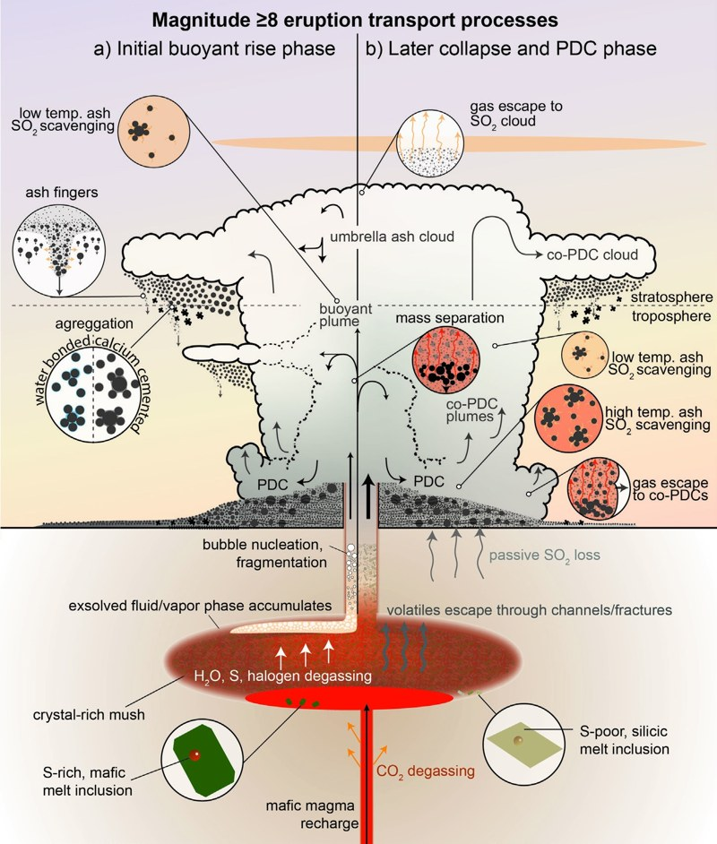
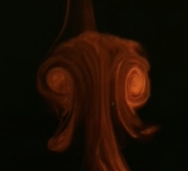
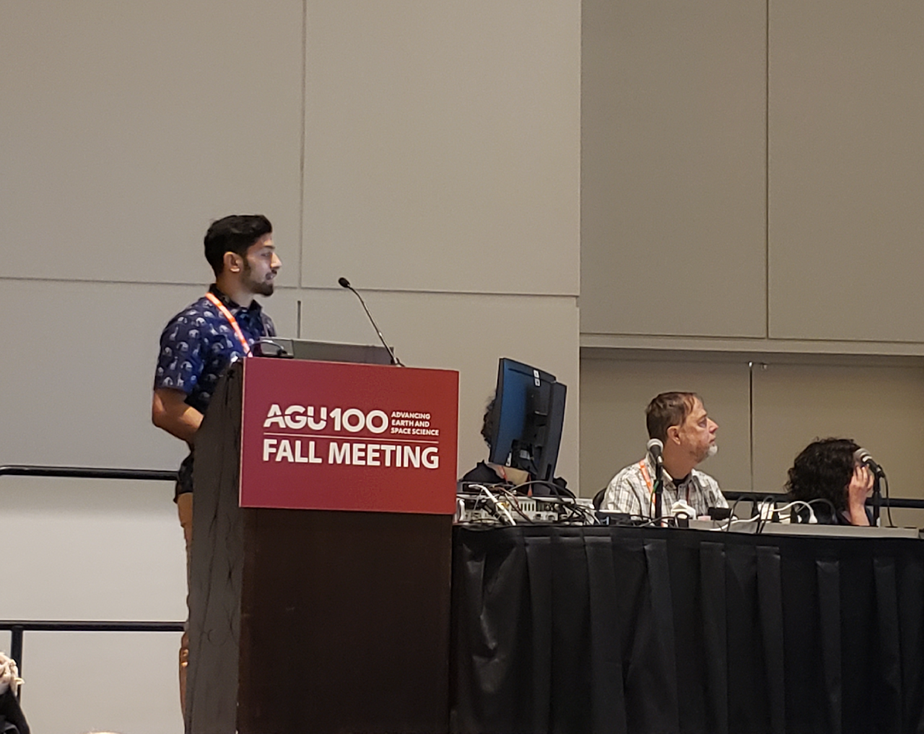

Dr. Johan
Gilchrist
Dartmouth College · Earth and Planetary Sciences
(he/him/his) · Yoshi
I use field, laboratory, remote-sensing and numerical methods to understand volcanic eruptions, landslides, glaciers, and wildfires. My expertise is in multiphase turbulent flow and explosive eruption dynamics, with growing interests in landslides, wildfire plumes, and methane river flows on Titan.
What would you like to know?
Who I am, what inspires me, and my journey from New Jersey to the mountains of the Pacific Northwest.
Volcanoes, landslides, glaciers, wildfires and planetary science — my publications, methods, and current projects.
Climate advocacy, museum education, and communicating science to the public.
Mountain biking, snowboarding, climbing, and life beyond the lab.
Research Highlights
Dynamics Governing the Delivery of SO2 to the Atmosphere by Volcanic Plumes
PAGES Magazine · October 2026 · Vol. 34 No. 2, pp. 60–61
Can the largest explosive eruptions (M ≥8) cause global volcanic winters? Growing evidence suggests not as intensely as once assumed. We highlight how eruption dynamics control the separation of erupted material between buoyant plumes and pyroclastic density currents, SO2 scavenging by ash and water, and rapid ash–sulfate aggregation and fallout to limit stratospheric sulfur injection and help reconcile discrepancies between petrologic and ice-core sulfur records.

Volcanic Vortex Ring Rise Model
Interactive Tool · Runs In-Browser
A 1D variable-entrainment vortex-ring / thermal rise model for natural volcanic vortex rings, adapted for rise through a real, stratified atmosphere. Set the vent conditions and atmosphere, then run the model directly in your browser — no installation required.

Contact
Dr. Johan T. Gilchrist (he/him/his)
Obering Postdoctoral Fellow
Earth and Planetary Sciences Department
Dartmouth College
226A Fairchild Hall
Hanover, NH
